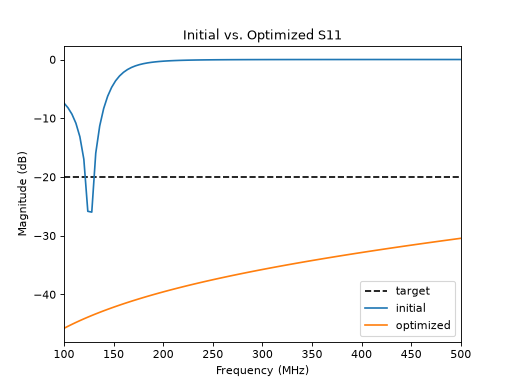

Model Optimization
ParamRF allows you to easily optimize model parameters to meet a given design goal. In this example, we design a simple low-pass filter using SciPy’s L-BFGS-B algorithm.
Defining the Model
When optimizing a model, instead of passing fixed floats, we pass free parameters to indicate that they are free to be tuned by the optimizer. This can be done using constructors like pmrf.Unconstrained or, more commonly, pmrf.Bounded:
import pmrf as prf
from pmrf.models import ShuntCapacitor, Inductor
C1 = ShuntCapacitor(C=prf.Bounded(1.0, 100.0, scale=1e-12))
L1 = Inductor(L=prf.Bounded(1.0, 100.0, scale=1e-9))
C2 = ShuntCapacitor(C=prf.Bounded(1.0, 100.0, scale=1e-12))
lpf = C1 ** L1 ** C2
It is best practice to apply a scaling factor to our values in order to keep the optimization numerically stable. To apply more complicated constraints and metadata, more parameters are available in pmrf.parameters that are re-exported at the root, such as pmrf.Constrained(), pmrf.Random() and pmrf.Fixed().
Running the Optimizer
Next, we define our design goals. In this case, we want to ensure good matching (low reflection) across our passband. We can use the Goal evaluator and pass it to the minimize() function alongside our frequency range:
from pmrf.evaluators import Goal
from pmrf.optimize import minimize, ScipyMinimize
match_goal = Goal('s11_db', '<', -20)
passband = prf.Frequency(100, 500, 101, 'MHz')
result = minimize(match_goal, lpf, passband, solver=ScipyMinimize(method='L-BFGS-B'))
The minimize() function returns an OptimizeResult object containing the optimized model and solver metrics. We can extract this newly fitted model to verify our results and print its parameters:
import matplotlib.pyplot as plt
import numpy as np
optimized_lpf = result.model
print("Optimized Parameters:")
print(optimized_lpf.named_params())
plt.plot(passband.f, -20.0 * np.ones_like(passband.f), color='black', linestyle='--', label='target')
lpf.plot_s_db(passband, m=0, n=0, label='initial')
optimized_lpf.plot_s_db(passband, m=0, n=0, label='optimized')
plt.title('Initial vs. Optimized S11')

For more complex designs, the minimize() function can accept a list of multiple goals. Each goal can also be paired with its own Frequency, which allows different features to be evaluated over different bands. For example, we can add a stopband rejection goal alongside our passband matching goal:
stopband = prf.Frequency(1, 2, 101, 'GHz')
result = minimize([
(Goal('s11_db', '<', -20), passband),
(Goal('s21_db', '<', -40), stopband),
], lpf, solver=ScipyMinimize(method='L-BFGS-B'))

See the Optimization and Inference page for how to weight such goals against one another. For even more advanced optimization, custom losses can be specified, either using the built-in losses in losses; using a custom callable; or by creating a custom AbstractEvaluator. The last example is the most powerful, allowing the specification of arbitrary, tunable hyper-parameters.
Note that ParamRF also provides convenience functions for fitting models directly to data in fitting(). See the tutorial for a detailed guide.